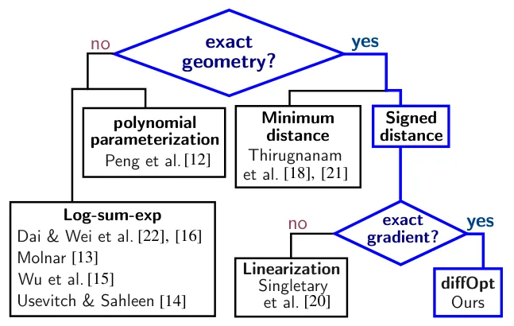
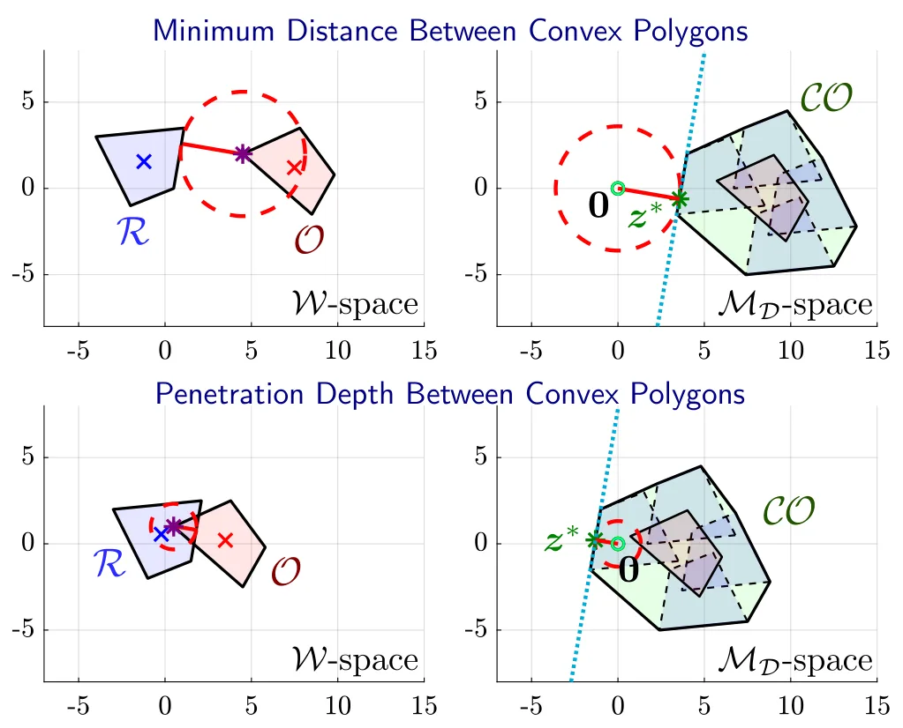
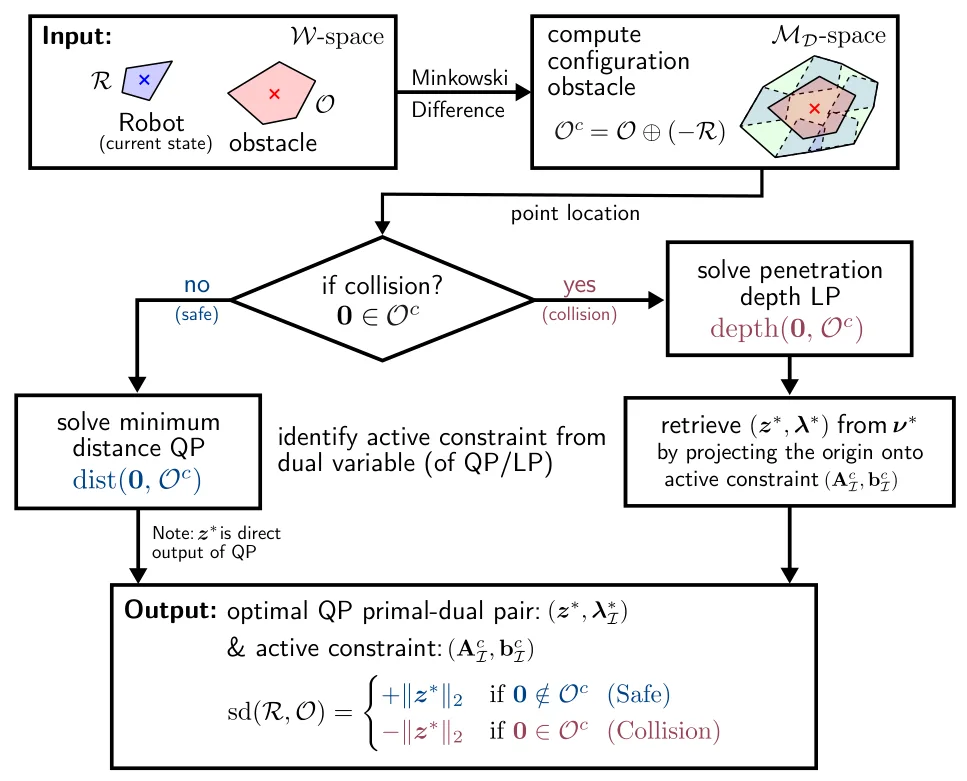
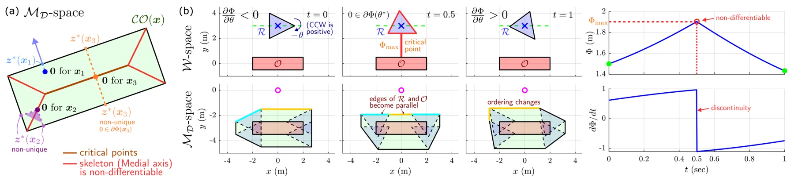
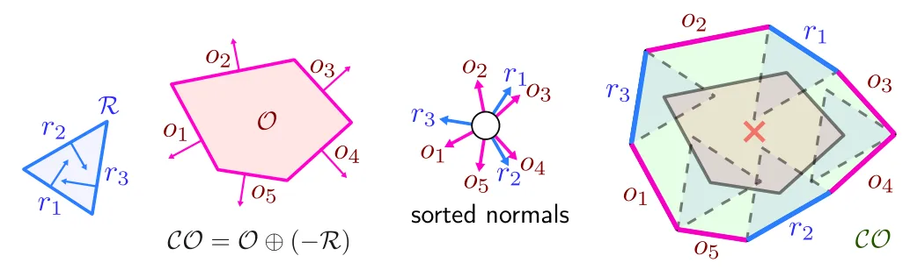
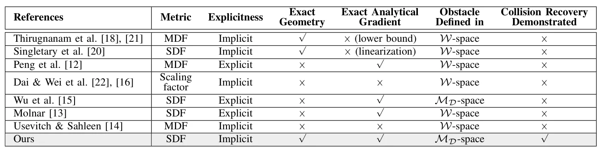

基于 Minkowski 运算的多面体安全导航控制障碍函数Control Barrier Functions via Minkowski Operations for Safe Navigation among Polytopes
与机器人几何、安全导航和 SDF 计算密切相关，对地图碰撞层有参考价值；核心不是状态估计、SLAM 或重建。
一句话工作总结
避免用球或椭球保守近似多面体，直接把精确几何距离及旋转梯度用于安全控制。
摘要
论文为多面体机器人与多面体障碍物构造精确有符号距离函数，并将其接入非光滑控制障碍函数。方法借助 Minkowski 运算，通过碰撞外和碰撞内两个配套凸程序计算带符号距离；在二维情形下，再由最优性条件和敏感性分析推导统一解析梯度，包括精确旋转梯度。实验覆盖纯平移、独轮车模型的不安全初始化恢复及单、多障碍规避。
Safely navigating polytopic environments while respecting the dynamics, control, and exact geometry of the underlying system is a challenge in robotics. Control barrier functions (CBFs) synthesize safe control policies by rendering the safe set forward invariant, but many existing CBF-based methods approximate polytopes using conservative smooth shapes, such as spheres or ellipsoids, to obtain explicit differentiable distance functions. In this article, we propose an exact Signed Distance Function (SDF) formulation for a {\it polytopic} robot and {\it polytopic} obstacles and integrate it with nonsmooth CBFs. Leveraging Minkowski operations, the proposed method computes the exact SDF via companion convex programs in both the collision-free (positive-sign) and in-collision (negative-sign) cases. Furthermore, by exploiting the convenient geometric properties of 2D Minkowski operations and the optimality conditions of the two companion convex programs, we derive a unified analytical expression for the gradient of the exact SDF via sensitivity analysis. The exact rotational gradient further reveals a previously masked class of local minima induced by the coupling between geometry and nonholonomic kinematics. We demonstrate the effectiveness of the proposed framework through a pure-translation case and three scenarios with unicycle models involving recovery from an unsafe initialization and single- and multiple-obstacle avoidance. Comparisons with baseline methods highlight how the proposed framework enables non-conservative maneuvers and safety recovery.
中文解读摘录
- 原题：URHead: A Unified UV-Space Representation for Joint Mesh-3DGS Optimization in Head Avatars
- 作者：Seonghak Lee, Junhee Cho, Jisoo Park, Min-Gyu Park, Jongmin Lee, Ju Hong Yoon, Junseok Kwon
- 推荐评分：8.0/10
- 核心方法：让网格与 3D Gaussian Splatting 共享 UV 参数化，通过联合优化和自适应 Gaussian 采样，自动分配可控几何与照片级细节的表达职责。
- 为何值得看：直接回应 hybrid mesh–3DGS 中结构一致性与可控性难兼得的问题；重点核查 UV 拓扑限制、遮挡区域稳定性以及能否推广到通用动态对象。
图表/页面预览
{kind=link}

{kind=link}

{kind=link}

{kind=link}

{kind=link}

{kind=link}
